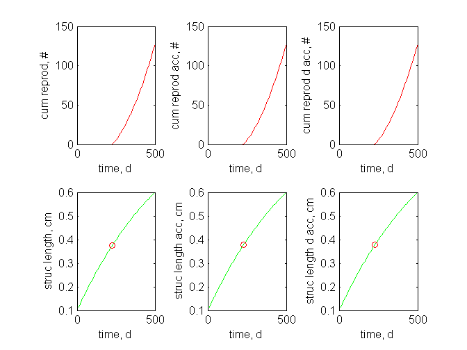

z = 1;
F_m = 6.5;
kap_X = 0.8;
kap_X_P = 0.1;
v = 0.02;
kap = 0.8;
kap_R = 0.95;
p_M = 18;
p_T = 0;
k_J = 0.002;
E_G = 2800;
E_Hb = 275e-3 * z^3;
E_Hs = E_Hb + 1e-5;
E_Hj = E_Hb + 2e-5;
E_Hp = 50 * z^3;
f = 1;
p_Am = z * p_M/ kap; E_m = p_Am/ v; g = E_G/ kap/ E_m; k_M = p_M/ E_G; L_T = 0;
U_Hb = E_Hb/ p_Am; U_Hp = E_Hp/ p_Am;
pars_cum_reprod = [kap; kap_R; g; k_J; k_M; L_T; v; U_Hb; U_Hp];
t = 10*(1:50)'; Lf = [.1 .5];
[N, L, UE0, Lb, Lp, tb, tp, info] = cum_reprod(t, f, pars_cum_reprod, Lf);
subplot(2,3,1)
plot(t, N, 'r')
xlabel('time, d')
ylabel('cum reprod, #')
subplot(2,3,4)
plot(t, L, 'g', tp, Lp, 'or')
xlabel('time, d')
ylabel('struc length, cm')
U_Hj = E_Hj/ p_Am;
pars_cum_reprod_j = [kap; kap_R; g; k_J; k_M; L_T; v; U_Hb; U_Hj; U_Hp];
[N, L, UE0, Lb, Lj, Lp, tb, tj, tp, info] = cum_reprod_j(t, f, pars_cum_reprod_j, Lf);
subplot(2,3,2)
plot(t, N, 'r')
xlabel('time, d')
ylabel('cum reprod acc, #')
subplot(2,3,5)
plot(t, L, 'g', tp, Lp, 'or')
xlabel('time, d')
ylabel('struc length acc, cm')
U_Hs = E_Hs/ p_Am;
pars_cum_reprod_s = [kap; kap_R; g; k_J; k_M; L_T; v; U_Hb; U_Hs; U_Hj; U_Hp];
[N, L, UE0, Lb, Ls, Lj, Lp, tb, ts, tj, tp, info] = cum_reprod_s(t, f, pars_cum_reprod_s, Lf);
subplot(2,3,3)
plot(t, N, 'r')
xlabel('time, d')
ylabel('cum reprod d acc, #')
subplot(2,3,6)
plot(t, L, 'g', tp, Lp, 'or')
xlabel('time, d')
ylabel('struc length d acc, cm')
